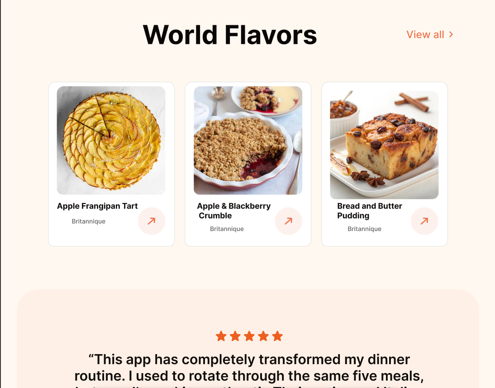
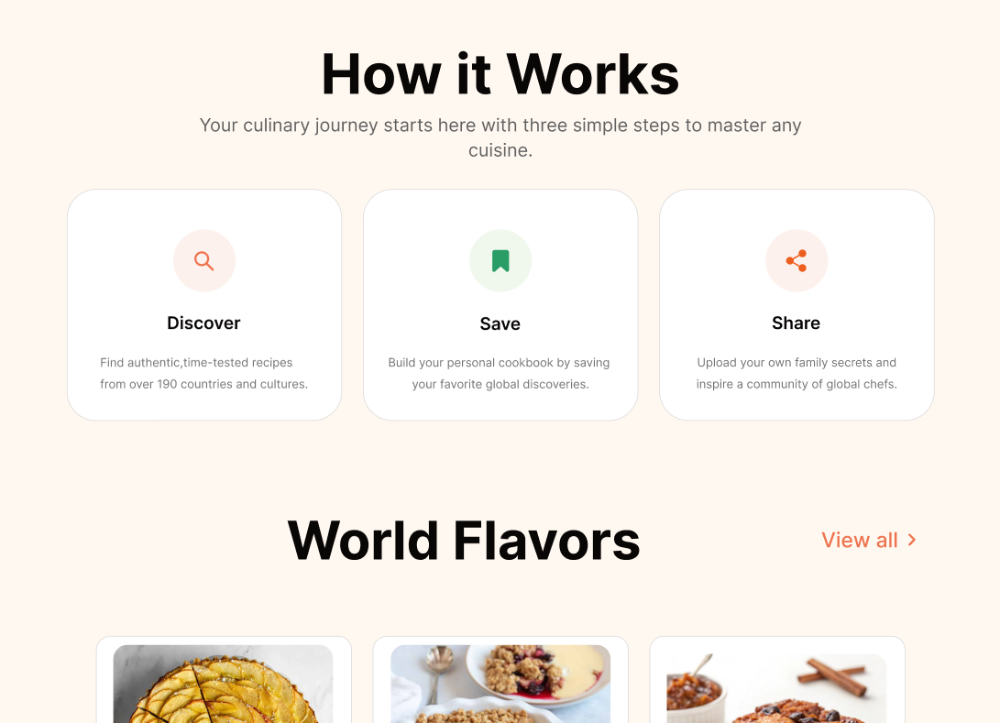
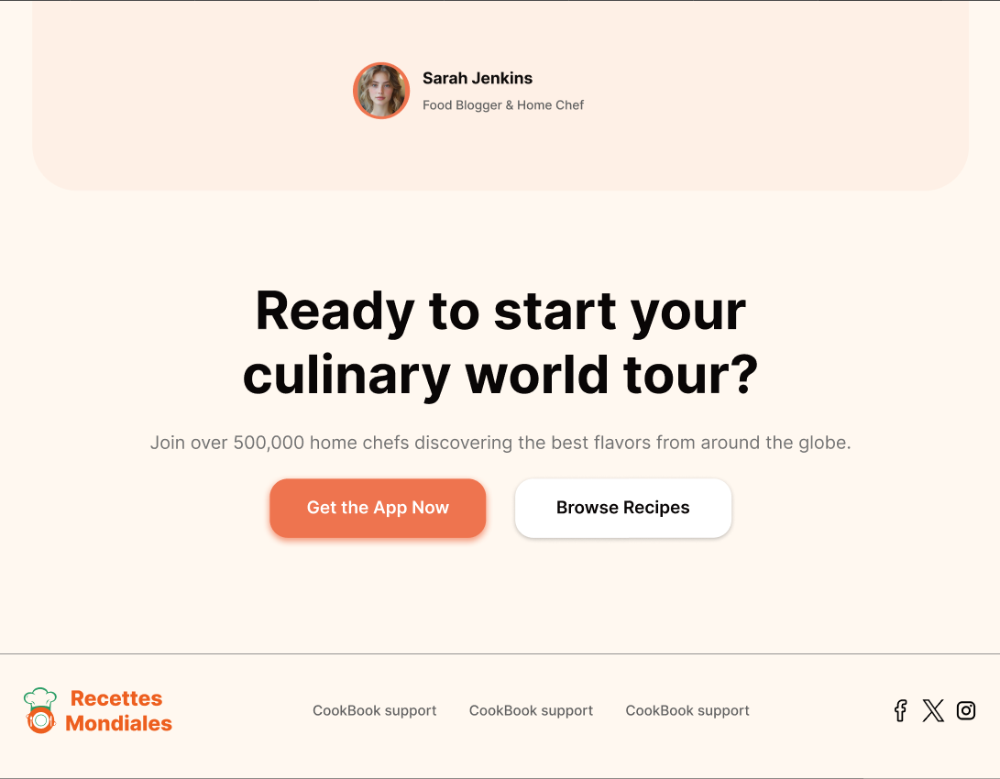

UX/UI Design
●
Concept
●
2026
Recettes
Mondiales
Recettes Mondiales is a concept for a recipe discovery app: taste-tested dishes from 195 countries and cultures. Hajar designed the landing page, hero to footer.
- RoleUX/UI Design
- DeliverablesLanding page & UI
- StatusConcept
- PaletteCream & orange
- Year2026


Three steps
to any cuisine
The landing explains the product in three cards: discover taste-tested recipes from 195 countries and cultures, save them to a personal cookbook, and share your own family recipes with other cooks.

